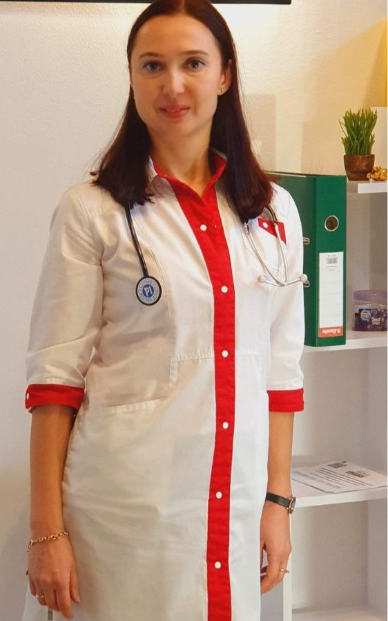

Оксана Володимирівна Пелецька Лікар вищої кваліфікаційної категорії кандидат медичних наук
Лікар-кардіолог Медичного центру Святої Параскеви м.Київ
Адреса: м. Київ, вул. Ентузіастів, 47
Прийом: вівторок, четверг, п'ятниця
9.00 - 16.00Дорогі друзі, проводжу шифрування ЕКГ та консультації в Медичному центрі
та дистанційно за номером телефона в Вайбері, Телеграм, WhatsApp
+380666093477 Якщо турбують болі у грудній клітині, задишка, головний біль, запаморочення, вічуття серцебиття,
перебої в роботі серця, набряки нижніх кінцівок, якщо ваш організм погано переносить фізичні навантаження - це
привід негайно звернутися до лікаря - кардіолога. Особливо в теперішніх воєнних умовах, коли організм постійно
перебуває під впливом стресу, захворювання серця та судин найбільше дошкуляють українцям. Тому вчасне їх виявлення
та профілактика є вкрай важливими.
ОСВІТА І СПЕЦІАЛІЗАЦІЇ
У 1997 році закінчила Харківський медичний університет
за спеціальністю "Лікувальна справа".
У 1998 році закінчила інтернатуру на базі Харківського інституту
удосконалення лікарів за спеціальністю "Терапія".
У 2002 році проходила навчання у Харківській медичній академії
післядипломної освіти та отримала сертифікат лікаря-спеціаліста
за спеціальністю "Кардіологія".
У 2009 році отримала науковий ступінь кандидата медичних наук
зі спеціальності "Кардіологія".
У 2018 році отримала вищу кваліфікаційну категорію
зі спеціальності "Кардіологія".
З 1998 року по 2022 рік працювала в стаціонарному
відділенні Харківської клінічної лікарні № 2.
Має досвід роботи у державних
та приватних медичних закладах.
Проведу консультацію з приводу ваших скарг
Інтерпретую результати ЕКГ, УЗД, Холтерівського моніторування ЕКГ та інших досліджень
Підберу індивідуальну програму лікування та профілактики
В разі необхідності направлю до спеціалізованих стаціонарних установ